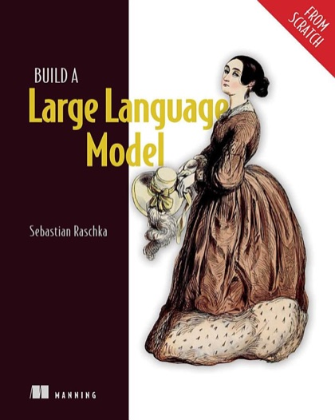

Writing / Book review
Build a Large Language Model (From Scratch): Understanding by Building
Sebastian Raschka walks you from tokenizer to pretraining to fine-tuning a GPT-style model in plain PyTorch. The fastest way to stop treating LLMs as magic.

- Book
- Build a Large Language Model (From Scratch)
- Author
- Sebastian Raschka
- Publisher
- Manning Publications, 2024
- ISBN
- 9781633437166
- My rating
- ★★★★★ 5/5
VerdictThe best hands-on path from "I use LLMs" to "I understand LLMs." Every engineer working on LLM systems should implement one once, and this book is the way to do it.
Richard Feynman's line, "What I cannot create, I do not understand," is the thesis of this book. Raschka has you build a GPT-style model from an empty Python file, one component at a time, in plain PyTorch.
I have built transformers before. I still learned things.
The build path
Each stage produces running code you understand line by line. No from transformers import magic.
What the book gets right
Attention, built up in layers
The attention chapter is the best explanation I have read for engineers. It builds from simplified self-attention to scaled dot-product, causal masking, and multi-head attention, each as a small working step.
The GPT block, demystified
Once you have written this yourself, model cards stop being mysterious. "24 layers, 16 heads, 1024 hidden" turns into a precise picture.
Fine-tuning two ways
What to know going in
- You need comfortable Python and basic PyTorch. The appendix helps, but it is not a PyTorch course.
- You will pretrain on small data, so the model will not be impressive. That is the point: the mechanics are identical at scale.
- It intentionally does not cover distributed training, RLHF in depth, or inference serving at scale.
How I use it
I recommend it to every mentee who wants to move from prompting to engineering, and I keep my own from-scratch implementation public as a study companion.
Verdict
Five stars. It is the rare book that makes you genuinely better at your job by making you build the thing.

Shivam Negi is an AI engineer and Principal Data Scientist who works on evaluating voice agents, small language models, and applied ML. More about me